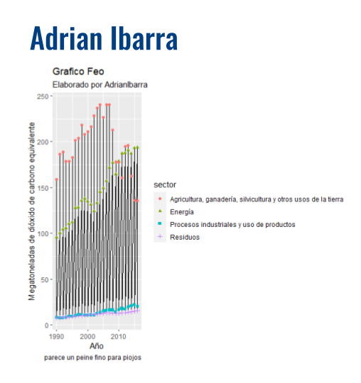
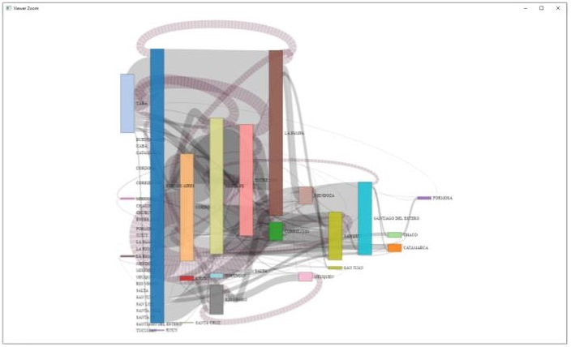
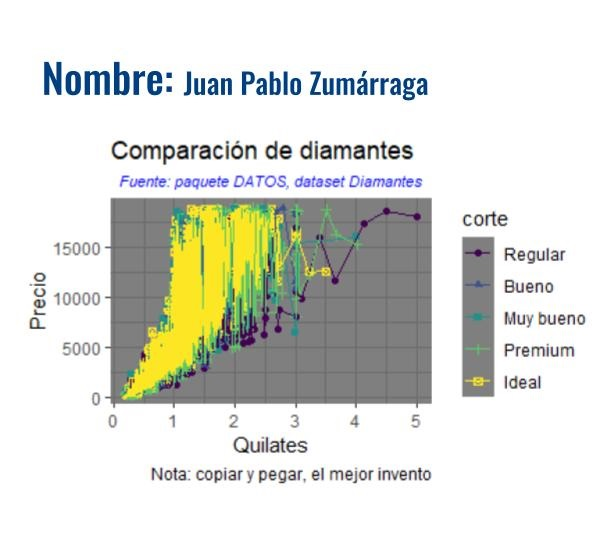
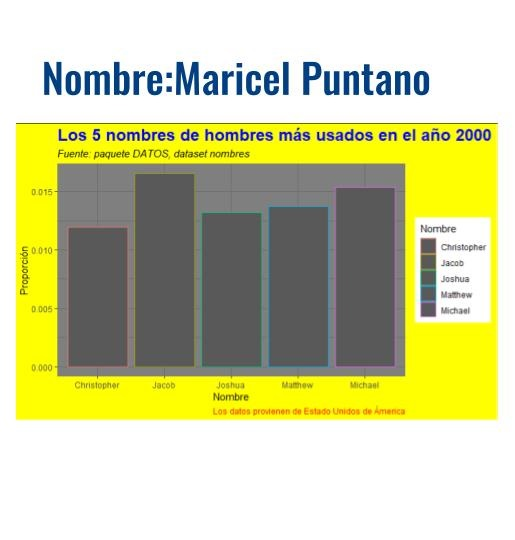
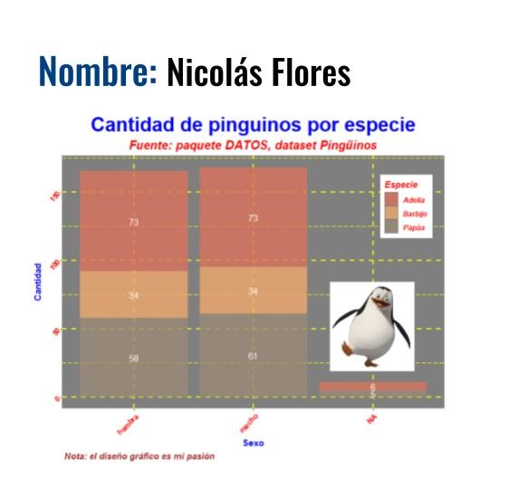
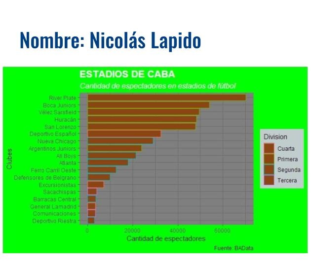
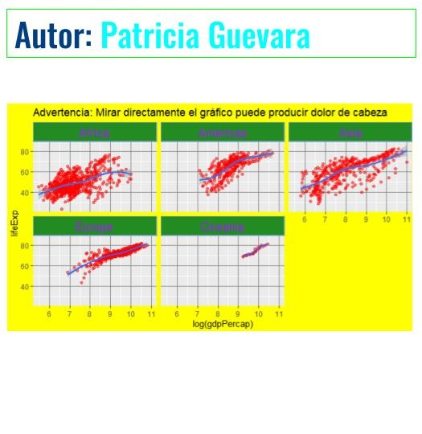
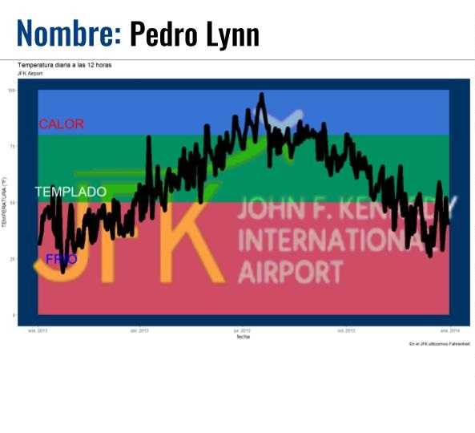

Cohorte 2020
Trabajos finales
Trabajos finales utilizando Tableau o RMarkdown y ggplot2.
Concurso el gráfico más feo
Adrian Ibarra
# base usada (emisiones_gei.csv)
gei %>%
ggplot(aes(x = anio, y = emisiones)) +
geom_ribbon(aes(ymin = emisiones - 1, ymax = emisiones + 1), fill = "grey10") +
geom_line(aes(y = emisiones)) +
geom_point(aes(color = sector, shape = sector)) +
labs(x= "Año", y = "Megatoneladas de dióxido de carbono equivalente",
title = "Grafico Feo",
subtitle = "Elaborado por AdrianIbarra",
caption = "parece un peine fino para piojos") 
Brian Corvaro
library("tidyverse")
library("dplyr")
library("patchwork")
library("ggplot2")
library("gapminder")
library("scales")
cuatro_cuatro = mutate(gapminder, gdpPercap_disc = ntile(gapminder$gdpPercap,5))
ggplot(data = cuatro_cuatro, aes(x= gdpPercap_disc, group=continent)) +
geom_bar(aes(y = ..prop.., fill = factor(..x..)), stat="count") +
geom_line(aes(y = ..prop.., fill = factor(..x..)), stat="count") +
geom_text(aes( label = scales::percent(..prop..),
y= ..prop.. ), stat= "count", vjust = -.5) +
labs(x= "PBI per Cap", y = "Porcentaje", fill="QUINTILES") +
facet_grid(~continent) +
ggtitle("Más Feo no se consigue") +
scale_y_continuous(labels = scales::percent)
Juan Pablo Zumárraga
library(gapminder)
library(ggplot2)
library(tidyverse)
library(datos)
diamantes %>%
ggplot(aes(quilate, precio)) +
geom_point(aes(color = corte, shape = corte)) +
geom_line(aes(color = corte))+
labs(x= "Quilates", y = "Precio",
title = "Comparación de diamantes",
subtitle = "Fuente: paquete DATOS, dataset Diamantes",
caption = "Nota: copiar y pegar, el mejor invento")+
theme_dark()+
theme(plot.subtitle = element_text(colour = "blue", face = "italic", size = 8, hjust = 0.5))
Maricel Puntano
nom <- datos::nombres
nom %>%
filter(anio==2000 & sexo =="M") %>%
select(nombre, prop)%>%
top_n(5)%>%
ggplot(aes(nombre, prop, color= nombre)) +
geom_col() +
labs(
x = "Nombre",
y= "Proporción",
title = "Los 5 nombres de hombres más usados en el año 2000",
subtitle = "Fuente: paquete DATOS, dataset nombres",
color = "Nombre",
caption="Los datos provienen de Estado Unidos de Ámerica"
) +
theme_dark() +
theme(plot.caption = element_text(color = "red"), plot.title = element_text(size = 18, color = "blue", face = "bold"), plot.subtitle = element_text(face = "italic"),
plot.background = element_rect(fill= "yellow"))
Nicolas Flores
library(dplyr)
library(ggplot2)
library(datos)
library(png)
library(patchwork)
library(ggthemr)
img <- readPNG("data/image.png",native = TRUE) #la imagen fue descargada y guardada previamente
ggthemr('dust') #primero seteamos el theme
ggplot(pinguinos, aes(sexo, fill= especie))+
geom_bar(alpha= 0.8)+
geom_text(aes(label = ..count..),stat = "count",position = position_stack(0.5), colour = "white")+
labs(x= "Sexo", y = "Cantidad",
title = "Cantidad de pinguinos por especie",
subtitle = "Fuente: paquete DATOS, dataset Pingüinos",
fill= "Especie",
caption = "Nota: el diseño gráfico es mi pasión")+
theme_dark()+
theme(plot.title = element_text(colour = "blue", face = "bold", size = 25, hjust = 0.5))+
theme(plot.subtitle = element_text(colour = "red", face = "bold.italic", size = 15, hjust = 0.5))+
theme(panel.grid.major = element_line(color = "yellow", size = 1, linetype = "dashed"))+
theme(panel.grid.minor = element_line(colour = "yellow",linetype= "longdash"))+
theme(axis.title = element_text(colour = "blue", face = "bold"))+
theme(axis.text.x = element_text(colour= "red",face = "bold", angle = 45, hjust = 1))+
theme(axis.text.y = element_text(colour= "red",face = "bold", angle = 45, hjust = 1))+
theme(legend.position = c(0.9, 0.8), legend.text = element_text(colour = "red", face = "bold.italic"))+
theme(legend.title = element_text(colour = "red", face = "bold.italic"))+
theme(plot.caption = element_text(colour = "brown", size = 11, face = "bold.italic", hjust = 0.01))+
inset_element (p= img, left = 0.92,
bottom = 0.15,
right = 0.7,
top = 0.50)
Nicolas Lapido
library(tidyverse)
library(datos)
library(here)
library(dplyr)
library(readr)
library(readxl)
estadios_caba <- read_excel("datos/estadios_caba.xlsx")
estadios_caba %>%
ggplot (aes(capacidad, fct_reorder(club, capacidad)))+
geom_col (aes(color = Division),
fill = "chocolate4")+
theme_dark()+
theme(plot.title = element_text(size = 16, colour = "white", face = "bold"), plot.subtitle = element_text(size = 12, colour = "white", face = "italic"), plot.background = element_rect (fill = "green"))+
theme(legend.background = element_rect(fill = "azure3"))+
labs (
x = "Cantidad de espectadores",
y = "Clubes",
title = "ESTADIOS DE CABA",
subtitle = "Cantidad de espectadores en estadios de fútbol",
captions = "Fuente: BAData",
color = "Division"
)
Patricia Guevara
library(dplyr)
library(ggplot2)
library(gapminder)
data("gapminder")
gapminder%>%filter(gdpPercap<70000 ) %>%
ggplot(aes( log(gdpPercap),lifeExp )) +
geom_point(alpha = 0.5,color="red")+
geom_smooth(method = loess)+
facet_wrap(~continent) +
#theme(strip.background = element_rect(fill="#228b22"),
theme(strip.background = element_rect(fill = "#228b22", colour = "#6D9EC1",
size = 2, linetype = "solid"),
strip.text = element_text(size=27, colour="purple")) +
theme(plot.background = element_rect(fill = "yellow"),
panel.grid.major = element_line(colour = "grey50"
)
) +
ggtitle("Advertencia: Mirar directamente el gráfico puede producir dolor de cabeza")
Pedro Lynn
library (datos)
library (tidyverse)
library (png)
library (ggpubr)
img.file <- "imagenes/JFK_Airport_Logo.png"
img <- png::readPNG(img.file)
clima <- datos::clima
grafico_feo <- clima %>%
filter(origen == "JFK" & hora == 12 & anio == max(anio) ) %>%
mutate (fecha = as.Date(paste(anio, mes, dia, sep="-"),"%Y-%m-%d")) %>%
ggplot (aes(y = temperatura, x = fecha))+
ggpubr::background_image(img)+
geom_rect(aes(xmin=as.Date("2013-01-01"),xmax=as.Date("2013-12-31"),ymin=0,ymax=50,fill="blue"), alpha=0.01)+
geom_rect(aes(xmin=as.Date("2013-01-01"),xmax=as.Date("2013-12-31"),ymin=50,ymax=80,fill="green"), alpha=0.01)+
geom_rect(aes(xmin=as.Date("2013-01-01"),xmax=as.Date("2013-12-31"),ymin=80,ymax=100,fill="red"), alpha=0.01)+
geom_line(aes(size = 3))+
annotate("text", x=as.Date(c("2013-01-22")), y=85, label= "CALOR", size = 10, colour = "red")+
annotate("text", x=as.Date(c("2013-01-30")), y=55, label= "TEMPLADO", size = 10, colour = "white")+
annotate("text", x=as.Date(c("2013-01-22")), y=25, label= "FRÍO", size = 10, colour = "blue")+
labs(
x = "fecha",
y = "TEMPERATURA (°F)",
title = "Temperatura diaria a las 12 horas",
subtitle = "JFK Airport",
caption = "En el JFK utilizamos Fahrenheit"
)
grafico_feo
Silvia Palacios
# Cargamos la libreria ggplot2 para trabajar
library(ggplot2)
# Se utilizó datos de mpg.
# Se presenta una comparación de los datos obtenidos en mpg, de la cilindrada del motor y el modelo de auto.
ggplot( data = mpg, aes(displ, color=model) ) +
geom_density()+
labs(title = "Grafico feo", subtitle = "inentendible",
x = "Cilindrada del motor", y ="Densidad" )